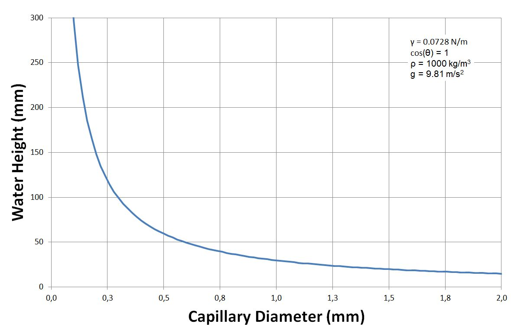
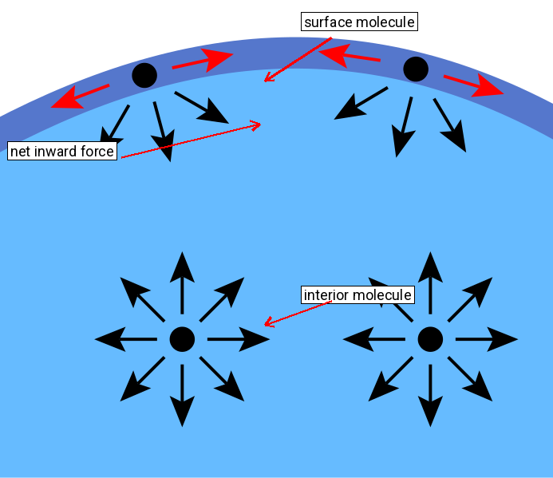
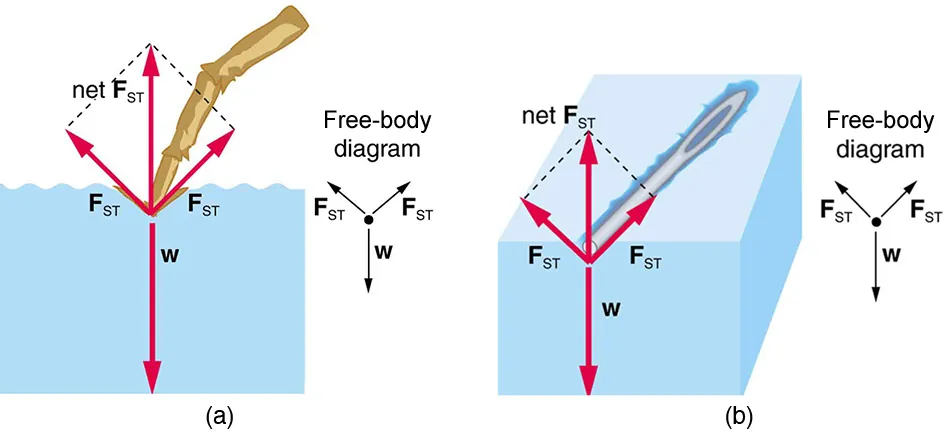
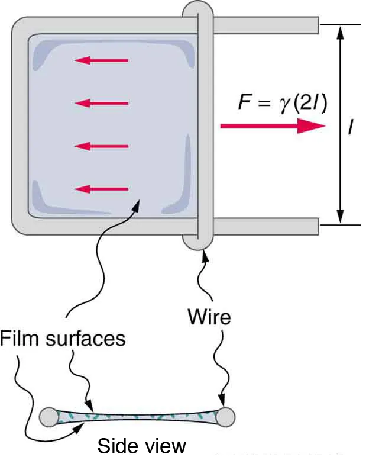

Fluids at Rest — Lesson 2
Capillarity & Surface Tension
Greenoak International School · Grade 10 Physics
Recall — from Lesson 1
- Cohesion — attraction between molecules of the same substance.
- Adhesion — attraction between molecules of different substances.
- Meniscus — the curved upper surface of a liquid in a tube.
Part A — Capillarity
What is capillarity?
Capillarity is the rise or fall of a liquid in a narrow tube, compared with the surrounding liquid level.
- Water in clean glass → rises.
- Mercury in glass → falls below the surrounding level.
Water vs mercury

- Water: adhesion > cohesion → rises (concave meniscus).
- Mercury: cohesion > adhesion → falls (convex meniscus).
The narrower the tube, the greater the effect

- A narrower tube → the water rises higher.
- A wider tube → the water rises less.
(The same rule applies to mercury falling.)
Factors that change capillarity
- Tube radius — narrower tube → greater rise.
- Type of liquid — different liquids behave differently in the same tube.
- Temperature — a warmer liquid rises less.
Everyday applications of capillarity
| Example | How capillarity helps |
|---|---|
| Blotting paper, chalk | fine pores draw liquid upward |
| Oil lamp wick | lifts oil / kerosene from the reservoir |
| Soil → plant roots | water lifts between soil particles |
| Rising damp in walls | water climbs porous bricks |
| Damp-proof course | plastic sheet that blocks capillary rise |
Part B — Surface Tension
What is surface tension?
Surface tension is the property by which a liquid surface behaves like a stretched elastic skin.
It is defined as the force per unit length acting across any imagined line drawn in the surface.
\[\boxed{\;T = \dfrac{F}{L}\;}\]
- Symbol: T
- SI unit: N m⁻¹
The molecular picture

- Inside the liquid: the molecule is pulled equally in every direction — the forces balance.
- At the surface: no liquid above, only air — the downward pull is unbalanced.
- Net inward force → the surface contracts like an elastic skin.
Phenomena caused by surface tension

- A clean steel needle can float on water, even though steel is denser than water.
- A water strider walks on a pond.
- Water droplets form spheres (smallest surface area for a given volume).
- Water does not drip through a closed silk umbrella — until the inside is touched.
The soap-film slider

A soap film has two surfaces (top face and bottom face).
Each surface pulls the slider with force \(TL\), so the total force is
\[\boxed{\;F = 2TL\;}\]
Factors that change surface tension
- Temperature up → T goes down.
- Soap / detergent added → T goes down.
- Most impurities → T goes down (salt is a weak exception).
Viscosity — related, but different
Viscosity is the internal friction between adjacent layers of a fluid in motion — the resistance of a fluid to flow.
- High viscosity: honey, glycerine, engine oil.
- Low viscosity: water, petrol, alcohol.
- For liquids: viscosity falls as temperature rises.
- For gases: viscosity rises with temperature.
Surface tension acts along the free surface of a still liquid; viscosity acts within a moving fluid.
Worked example
A slider of length 5.0 cm stretches a soap film of surface tension T = 0.025 N m⁻¹. Find the force on the slider.
Working.
\[L = 5.0\ \text{cm} = 0.050\ \text{m}\]
\[F = 2TL = 2 \times 0.025 \times 0.050\]
\[\boxed{\;F = 2.5 \times 10^{-3}\ \text{N} \;=\; 2.5\ \text{mN}\;}\]
Class task
Copy each question into your exercise book and answer there.
- Define capillarity in one sentence.
- State three everyday applications of capillarity.
- Why does mercury fall below the surrounding level when a glass capillary tube is dipped into it?
- Define surface tension and state its SI unit.
- State three phenomena caused by surface tension.
- A soap film is stretched on a wire frame; the slider has length \(L = 8.0\ \text{cm}\) and the surface tension is \(T = 0.030\ \text{N m}^{-1}\). Calculate the force on the slider.
Homework (1 of 2)
Bring written answers to Lesson 3.
- State three applications of capillarity and explain each briefly.
- A bricklayer places a plastic sheet (damp-proof course) between the brick wall and the foundation. State the physical reason.
- State what happens to the capillary rise if the water is warmed. Give the physical reason in one sentence.
Homework (2 of 2)
- What is surface tension? (b) Describe a simple experiment to demonstrate it. (c) State three examples of its effects.
- State what happens to the surface tension of water when: (a) it is warmed, (b) detergent is added, (c) it is cooled.
- A wire frame holds a soap film across a slider of length 12.0 cm. The force needed to hold the slider is \(7.2 \times 10^{-3}\ \text{N}\). Calculate the surface tension of the soap solution.